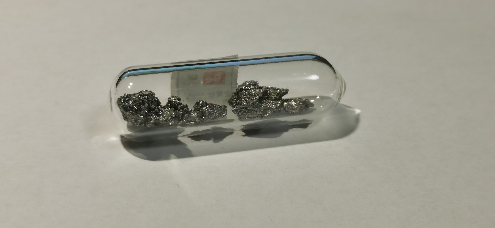
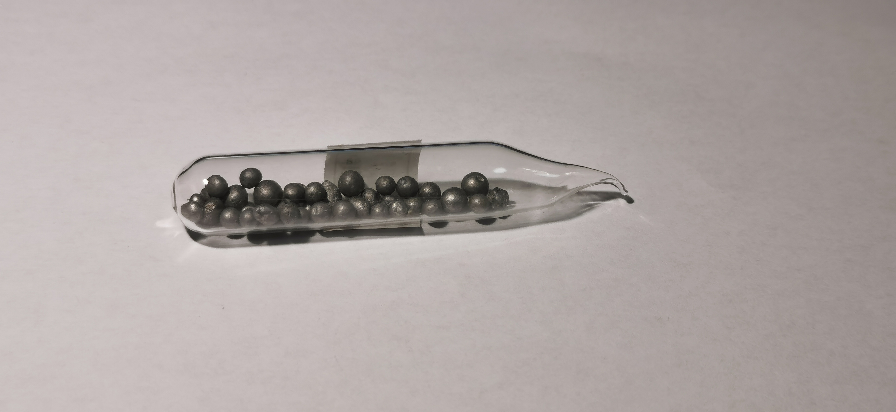
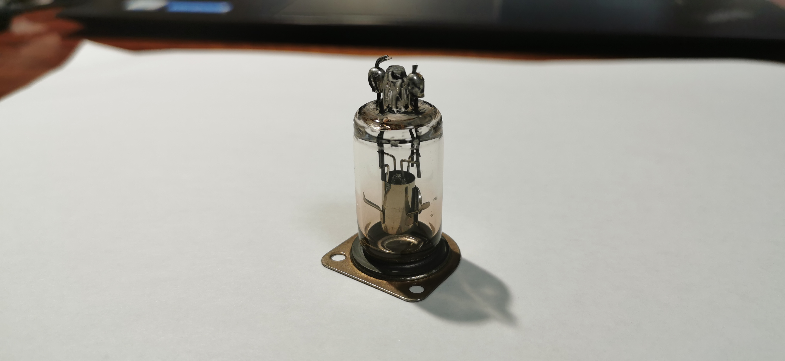
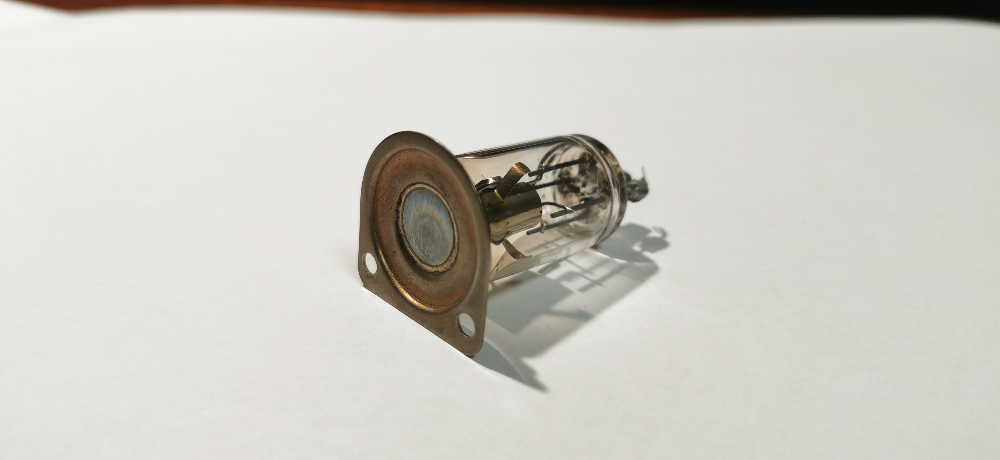

铍
2019.4 哈萨克斯坦 晶体 99.58% 来自冥灵
铍：在化学性质上，铍与同族的碱土金属格格不入，就像锂与同族的碱金属格格不入一样；在研究锂与铍时，常常想到对角线规则，即锂与镁，铍与铝有相似性，如偏铍酸根。在单质上也是如此，锂和铍分别是碱金属与碱土金属中最硬的，它们的熔点也高于同族金属。
毒性：铍盐对人体有极大的毒性。对于可溶性铍盐摄入体内，常常会与血液中蛋白质作用，导致脏器衰竭；另外一个更引人注目的点是，铍单质燃烧时产生浓郁的白烟，细小的氧化铍被吸入肺中十分难缠，会形成几乎永久性的慢性肺癌，难溶性铍盐在人体中仍然不易被排出。我们常见祖母绿宝石，就是铍铝硅酸盐，但它毒性较小，因此用硅酸盐沉淀铍离子也是处理铍废液的好方法。
2019.5 铍粒 99%
铍粒：在工业上，实验室中接触的铍不会是结晶铍，而是这样的铍粒。显然，这是由于对角线规则，即使是很纯的铍，在空气中也会由于形成致密的氧化膜而失去银白色光泽，呈现黯淡的灰色。为了展示这种性质，我特别收藏了这种已经氧化过的铍粒。
2019.7 （含铍窗的）迷你X射线管 来自张Sir
 X射线管：铍在核工业上作为热中子反射材料，但铍最早在工业上的应用是X射线管的铍窗。X射线管的工作原理是将高压电转化为电磁波，但这种转换的概率很小，很大程度上都由于热效应散失了，因此需要一个好的窗口能敏锐地射出这些X射线而不是吸收它们。铍的分子量很小，对X光的吸收很少，因此高纯铍被清洁后制作成箔，作为X射线管的窗口。一般医疗上的X射线管是较大的，粗细大概接近胳膊粗细，本次获得的X射线管很小，商家也暂不知道它的实际用途。